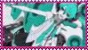
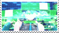
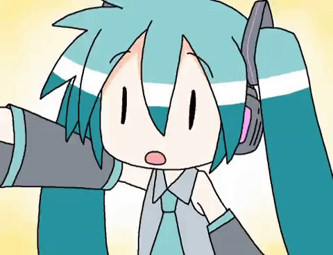
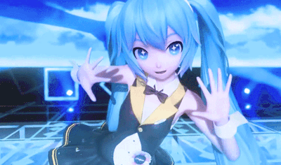
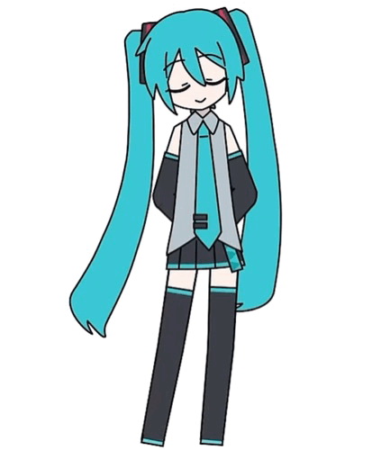
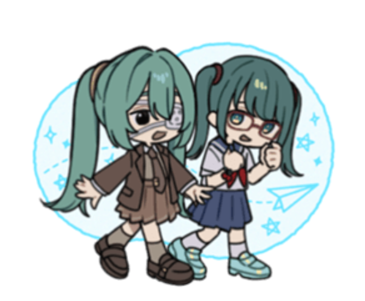
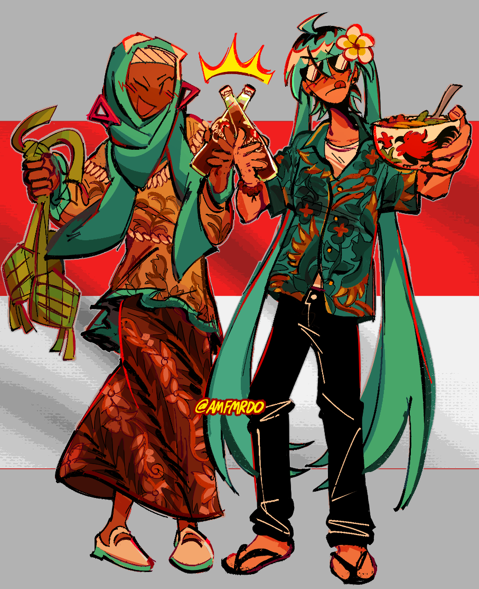
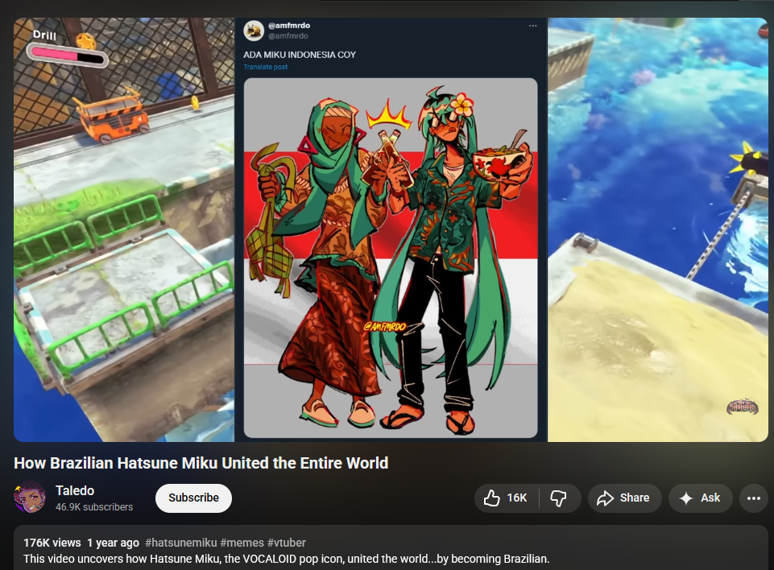
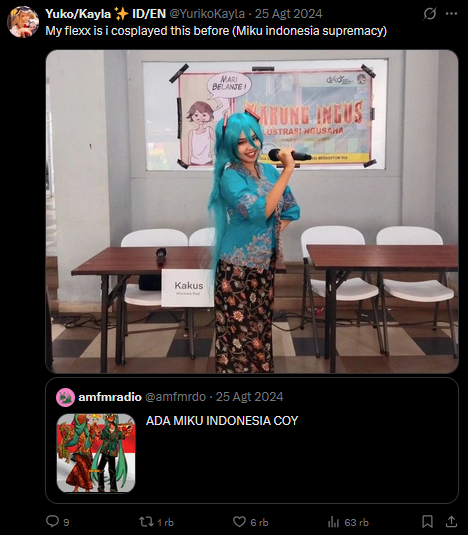

Hatsune Miku


First and foremost I cannot understand why I like vocaloid music. You cannot go to a normal person and show them vocaloid music without painting yourself as an insane person in their eyes. "Yes I like headache-inducing music with the most obnoxious high-pitched voices known to man. Who sang these? Okay so it's not actually real people singing these it's voicebanks made by real people but they are packaged and branded and personified as anime girls." Do you know how much that makes you sound like a loser. Surely you must get it?


I didn't actually start listening to Vocaloid all that much until after high school. I've listened to it every now and then, but I never got hooked on any songs. I didn't have much friends who were into Vocaloid, and for the ones that were, they weren't very outspoken about it. My knowledge of Vocaloid at the time was just that Hatsune Miku existed. And even then, I thought she was boring. She was just another generic anime girl to me. I thought that the people who liked her were shallow and I thought that she didn't have much going on for her. Besides, she isn't from a show, or a comic book, or a video game. How am I supposed to enjoy this character then!
So for years it was like this. Some friends showed me Vocaloid (and UTAU) songs, I listened to them, and didn't think much of them. Sometimes, I liked the art and minor animations in the music (more like lyric) videos. For a very long while, my interest in Vocaloid was mostly leaning towards the art and animation part of its community's music videos. This kind of explains why I would rather watch looped animation memes on Youtube than look at often scrappy looking amateur Vocaloid animated music videos (it's really the same thing, but bear with me here, I was a furry artist when I was younger and this was to be expected). And because of this, it wasn't until a certain music video came out that impressed me so much that I finally dove into the Vocaloid community to see what it has to offer:

WHERE IT ALL STARTED
Mesmerizer by 32ki It doesn't get any more newgen than this. I'm almost a little embarassed to admit that this is where my love for Hatsune Miku started, if it were not for the incredible animation by channelcaststation. It shouldn't be surprising that this video has more than a hundred million views. I don't know where to start! The bouncy little animations when the characters are quickly swaying back and forth and changing poses are so charming to me. It's like jingling colorful keys in front of an infant. The entire time I watched this video, I kept going, "wow, this is so well-made! I love the amount of attention to detail and timing! The short story it tells is so fun!" And then I dove into the comments section, and it's like, holy shit. There's EASTER EGGS? And I kept rewatching the video to find them. And everytime I found one it was like my brain exploded. So much effort went into this song! This is a work of art!
I sent this video to my friend who is an avid Vocaloid listener (yes I know Teto is an UTAU and not a Vocaloid). He's a longtime fan. You know what his response is? He says that the music isn't to his liking. "It's too high-pitched and fast, it makes me dizzy". And I think at that moment, I had a moment of self reflection. That's exactly what I've been fucking saying about Vocaloid this entire time. I understand where he was coming from; if the music video didn't exist, I don't think I'd like the song as much. The animation and character designs is what gives personality to the song. And then I was like, wait a fucking minute... Is this what makes people interested in Vocaloid? Not just the song itself, but the amount of creativity and effort put into each song?
It really took me this long to figure out that Vocaloid isn't completely about the music, but more about the creativity of the community (in my opinion). I thought about it, and wow. Vocaloid really does enable talented people who cannot sing or find singers to create music that would otherwise never exist. Isn't that amazing!!
And then it started. Oh no...
WHO IS HATSUNE MIKU?

This character, I started to look at her differently. Hmm. I can acknowledge that she is cute. She does have a very iconic and memorable character design. Yes yes. But that's all that is going on is it? I asked myself why people seem to like such a blank canvas of a character. What is it about her that people make so much fanart, buy so much merch of her, and even attend her concerts? I must delve deeper and do more research..!
So I started watching more Vocaloid videos on Youtube. Specifically ones featuring Miku. After all, it's new territory and I have to familiarize myself with the basics first. I (re)watched the classics. Senbonzakura by WhiteFlame, Rolling Girl by wowaka, Miku by Anamanaguchi, Popipo by LamazeP. I learned to appreciate the music more, and more importantly for me, appreciate the characterization of Miku. "What characterization? You just said she was a blank canvas!" Yes, that is precisely what makes her so interesting! Miku can really be anything you want, and because of this people modify her and change her up according to each of their musical style and persona. Miku... she never gets old. She gets a fresh coat of paint every minute, and there's hundreds, maybe thousands of interpretations of her. And you know what? Each interpretation of her is unique and wonderful in their own way. I think that's what makes her so loveable. She can really be anything anyone wants. She is so talented, and she does so many things, and she never gives up. and here I am complaining about work and being lazy. I should learn to be more like Miku...
MY FAVORITE MIKU SONGS
Apart from Mesmerizer, I have a handful of favorite Miku songs (ones I can get the embed links of)! Prefacing that there are no hidden gems here. My interest in Vocaloid only really spans the first few layers of the Vocaloid Iceberg.
Static by FLAVOR FOLEY There's so much I love about this one. The song itself is so so catchy, I had to play it a few more times when I first listened to it. Every one of my friends liked it too! And the music video it's accompanied by is perfect... Not sure how to describe it correctly, but the simple artstyle and the bright colors is so good at capturing the feelings and essence of the song. Very Saturday-morning-cartoon. Static Miku has got to be one of my favorite designs - she is so cute!!! I never realized that English Miku songs could sound so good. FLAVOR FOLEY is such a talented group. It's a blast to see them grow. I also really like Water The Roses, Spoken For, and BUTCHER VANITY, all by the same group. I think it's cool that they use lots of different voicebanks!
Monitoring by DECO*27 This one is amazing. I know Deco*27 constantly pumps out banger after banger, but I'm so fond of this song and animation. A very solid Miku song if you ask me and one of his best for sure. I don't know how many times I replayed it, the "MWAH!" is so very cute.. It makes me want to keep listening.. I have no idea what kind of Miku DECO*27 uses because that shit is NOT normal.
Also, out of curiosity, I checked the LINE stickers for his music. It turns out, on the other side of the door, it is another Miku!

The Vampire by DECO*27 I remember when everyone's profile pictures on social media was this Miku. I couldn't believe it was Miku at all at the time. It looks nothing like her! I was still young and didn't know... Now I know better. It's kind of funny how sexual the song is. I didn't expect it at all. I remember listening to this in the first time, and thinking nothing much of it. Now I'm a fan. I can't include more DECO*27 songs without people jumping me, so I'll just list down that I also really enjoy Hao and Telepathy.
God-Ish by PinocchioP I think it took me a while to finally acquire the taste for this song. It was hard for me to tell that it was Miku because of the way she was illustrated here. I think this was one of the first Miku songs where I bothered to look up English covers because I was so curious if JP songs can be translated. I like this cover in particular by MaeFae!
Nee Nee Nee. by PinocchioP I'm surprised that I like PinocchioP's songs, because if I had listened to them a few years ago, I probably would dislike them for the music style. It's very unique sounding and I can understand why he is one of the most well-known Vocaloid musicians. I'm actually not a big fan of Rin nor Len (sorry not sorry), but I really enjoy how she is tuned and used in this song. So I think this one deserves to be in my archive for making me listen to a Rin song. PinnochioP makes some other songs I really like, like Reincarnation Apple and Apple Dot Com.
MIKU WORLDWIDE
This trend is so cool oh my god. I loved seeing everyone's own Mikus pop up. But when it first started I couldn't find an Indonesian Miku. I have never been so motivated to draw anything.

I had so much fun drawing this. Was smiling to myself and stuff. This illustration is probably my magnum opus. It got 7000 retweets and 30000 likes on Twitter, and nearly 60,000 notes on Tumblr. I'm so happy that people love my contribution to the Miku Worldwide trend. I loved reading everyone's comments and reactions, it made me so joyful... And some things that surprised me:

I appeared in this Youtube video! I think it surprised me like crazy because that's the first time I've seen my art inside of someone's video. I'm even credited too, which you don't see all the time.
You can watch it here!
This person quoted over my tweet with a cosplay they have done before! What's crazy to me is that I actually debated coloring the left Miku's shirt with a teal color just so she is more Mikulike, but I thought that that would be too much. I guess I was wrong. This cosplay is so sick. I think people are allowed to quote retweet my tweets only if they tweet something cooler like this.
Here is the tweet!
link me!


est. 2024 © amfmradio.org